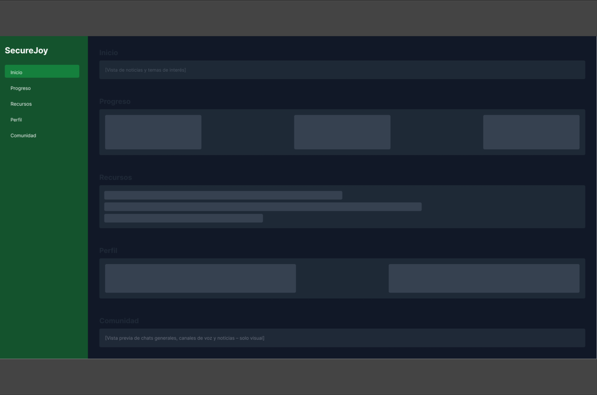
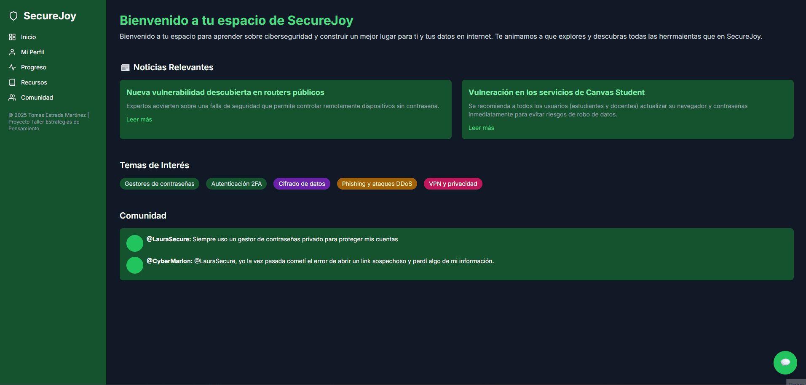

Introducción
Este blog hace parte de un proyecto que parte del ideal de mejorar los conocimientos sobre ciberseguridad a
usuarios de internet del día a día.
Usamos una herramienta para abordar la problematica llamada Design Thinking, la cual nos ayuda a ver los
problemas visibles y tangibles, y dar soluciones útiles.
Aquí vemos las piezas clave retoralimentadas en las dos fases anteriores: empatizar y definir.
En la fase de empatizar se realizaron entrevistas y encuestas que evidenciaron el desconocimiento general
sobre temas básicos de seguridad en línea como contraseñas seguras, phishing y el uso de redes públicas. En
la fase de definir se determinó como principal necesidad: educar a los usuarios con contenido accesible,
visual e interactivo.
Nuestra conclusión de la problematica y nuestro usuario final
Utiliza internet diariamente para trabajar, entretenerse y conectarse a través de redes sociales, pero
no tiene hábitos seguros como el uso de contraseñas fuertes o autenticación en dos pasos. Sus principales
objetivos giran en torno a mejorar su seguridad digital de manera práctica y sencilla, con un fuerte interés
en herramientas accesibles y fáciles de aplicar. Se frustra fácilmente cuando la información es demasiado
técnica o cuando no encuentra guías claras para proteger su privacidad, lo que evidencia la necesidad de
soluciones accesibles, educativas y visualmente amigables para este tipo de usuario.
Entonces... ¿Cómo abordamos nuestra problematica y cual puede ser una solución viable?
Fase Idear
Para esta fase utilizamos la técnica de brainstorming con el fin de generar ideas
creativas
que dieran solución a las necesidades distinguidas. Para esto nos enfocamos en cuatro pilares
principales
que
giran entorno a nuestra solución principal: Una aplicación web diseñada para capacitaciones y
aprendizaje
sobre ciberseguridad en linea:
- Educación y concienciación digital: Exponer situaciones de riesgo en internet como
ataques de phishing o malware, y brindar herramientas practicas
de forma didactica para comprender y ejecutar correctamente su uso.
- Recursos confiables y referencias: Se presentan y disponen de fuentes de
información
oficiales y seguros sobre ciberseguridad para generar confianza
y fiabilidad por parte de nuestros usuarios.
- Soporte para usuarios: Canales de ayuda activos y confiables, donde personas
expertas y
estudiantes, compartirán su información y experiencias
para retroalimentar el proceso de forma conjunta.
- Materialzación de ideas y prototipos: Se plantean posibles features para nuestra
aplicación web de ciberseguridad para dar un diseño amigable, facil de usar,
con un buen flujo y experiencia de usuario.
En el siguiente link puedes ver el esquema visual de nuestro brainstorming mas a detalle:
Esquema en Canva
Fase Prototipar
A partir del brainstorming, se elaboró un prototipo de baja-media fidelidad (mockup) en Figma. Este
incluye
una interfaz
sencilla que simula la estructura principal de la pagina y expone nuestras ideas planteadas
anteriormente
poniendo como prioridad el posible diseño de apartados como: Perfil, progreso, comunidad y recursos.

Puedes ver el prototipo de baja-media fidelidad (mockup) aquí:
Mockup en Figma
Este prototipo toma elementos de las simulaciones interactivas, el blog y el diagnóstico de seguridad,
permitiendo navegar entre ejemplos y consejos prácticos.
Prototipo de Alta Fidelidad
Se desarrolló un prototipo más refinado y funcional para mostrar la experiencia de usuario final.

Accede al prototipo aquí:
Prototipo de
Alta Fidelidad
Este prototipo representa una versión visual detallada y navegable de la aplicación web de
ciberseguridad.
Fue diseñado con un enfoque minimalista, moderno y educativo, simulando la experiencia final del
usuario.
Objetivo
-
Visualizar la interfaz final y validar la experiencia de usuario.
-
Mostrar la estructura funcional y el diseño visual de la plataforma.
Secciones principales
-
Inicio: Noticias y posibles temas de interes
-
Progreso: Avance del usuario, formularios, retos y quizzes.
-
Recursos: Cursos, enlaces externos y material educativo.
-
Perfil: Información personal, historial y actualización de la información.
-
Comunidad: Vista previa estática de chats, canales y espacios de interacción.
* Vale aclarar que ninguno de los apartados vistos en nuestro prototipo de alta fidelidad poseen
funcionalidades reales mas que la navegación entre ellas e interacción sobre lógica con formularios y
potenciales quizzes y demás actividaes interactivas.
Conclusiones de la experiencia
Este proyecto nos permitió entender mejor los problemas que tienen muchas personas con la seguridad en
internet, especialmente por la falta de información clara y accesible. Usando el enfoque de Design
Thinking, en las fases de empatizar y definir conocimos las verdaderas necesidades de los usuarios y
creamos un perfil que nos ayudó a guiarnos en todo el proceso.
Luego con ayuda de un brainstorming, generamos ideas centradas en educar al usuario de forma práctica y
visual. Esto nos llevó a desarrollar un prototipo de alta fidelidad y un mockup funcional de la app
SegurApp, con un diseño atractivo, accesible y pensado para enseñar y capacitar a nuestros usuarios
sobre ciberseguridad de manera
sencilla.
Con este proyecto buscamos aportar una solución útil, educativa y fácil de usar frente a una
problemática muy actual como lo es la ciberseguridad.